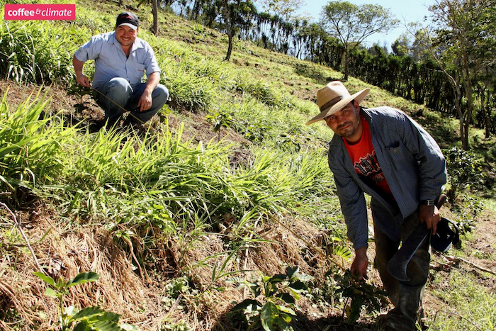
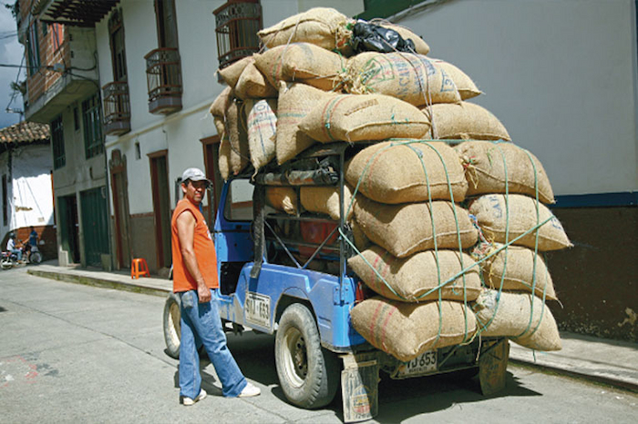
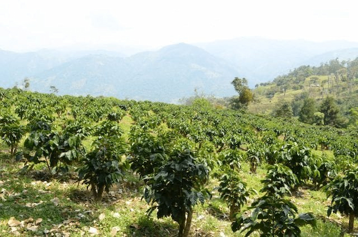
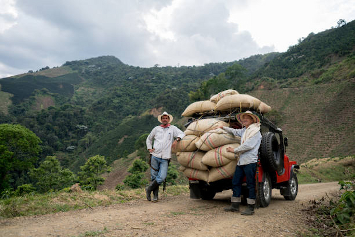

¿De Dónde Vienen Nuestros Productos?
Nuestros productos provienen de las mejores plantaciones de café en Colombia. A su vez también, estamos en contacto con diversos proveedores de granos de café de todas partes del mundo. Contamos con la mayor red de conexiones para que, además de acceder a una vasta gama de granos, puedas disfrutarlos desde la comodidad de tu hogar; gracias a nuestro eficiente servicio de entrega a domicilio.



